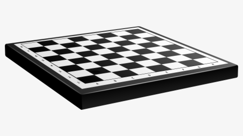

Setup
Board
The game is played on a square board of eight rows (called ranks, denoted 1 to 8 from bottom to top according to White's perspective) and eight columns (called files, denoted a to h from left to right according to White's perspective). The 64 squares alternate in color and are referred to as light and dark squares. The chessboard is placed with a light square at the right-hand corner nearest to each player. Thus, each queen starts on a square of its own color (the white queen on a light square; the black queen on a dark square).
Pieces
Chess pieces are divided into white and black sets. While the sets may not be literally white and black (e.g. the light set may be a yellowish or off-white color, the dark set may be red), they are always referred to as "white" and "black". Each set consists of 16 pieces:
- 1 king
- 1 queen
- 2 rooks
- 2 bishops
- 2 knights
- 8 pawns
The pieces are set out as shown. The players of the sets are referred to as White and Black, respectively.
Movement
In competitive games, the colors are allocated by the organizers; in informal games, the colors are usually decided randomly, for example by a coin toss, or by one player concealing a white pawn in one hand and a black pawn in the other, and having the opponent choose. White moves first, after which players alternate turns, moving one piece per turn (except for castling, when two pieces are moved). A piece is moved to either an unoccupied square or one occupied by an opponent's piece, which is captured and removed from play.
Chess moves
| Pieces | Movement |
|---|---|
| King | moves exactly one square horizontally, vertically, or diagonally |
| Queen | moves any number of vacant squares diagonally, horizontally, or vertically |
| Rook | moves any number of vacant squares vertically or horizontally |
| Bishop | moves any number of vacant squares in any diagonal direction |
| Knight | moves one square along any rank or file and then at an angle. The knight's movement can also be viewed as an "L" |
| Pawn | moves forward to the unoccupied square immediately in front of it on the same file, or on its first move it can advance two squares along the same file, provided both squares are unoccupied or the pawn can capture an opponent's piece on a square diagonally in front of it on an adjacent file |